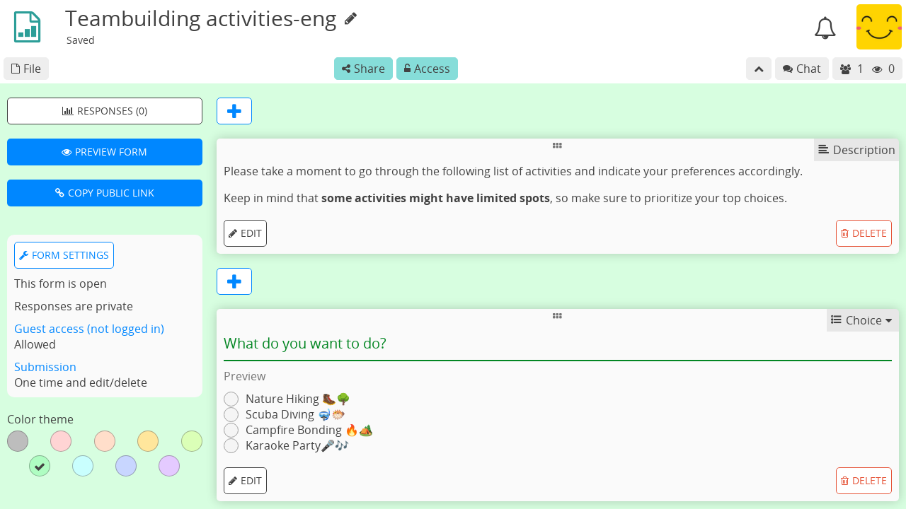

Formulario¶
Roles¶
Los formularios se benefician de las mismas funciones de colaboración y privacidad que las otras aplicaciones de CryptPad. También tienen requisitos ligeramente diferentes en lo que respecta al uso; por ejemplo, alguien que responda a un formulario debería poder editar sus propias respuestas pero no las de otros usuarios ni el formulario en sí. Por esta razón los Derechos de acceso al compartir un formulario son diferentes de las otras aplicaciones. Los formularios tienen 3 roles diferentes:
Autor: puede editar preguntas y form settings.
Editor: puede ver las respuestas al formulario sea público o no.
Participante: puede responde el formulario y solo ver las respuestas una vez que el autor las haga públicas.
Para compartir un formulario con un rol específico, por ejemplo para enviarlo a los participantes, selecciona el rol en el menú Compartir antes de seleccionar contactos o copiar el enlace.

Nota
La lista de usuarios, el chat y las alertas sobre los usuarios que se unen a la sesión colaborativa se desactivan cuando un participante responde a un formulario. Esto es para evitar dar la impresión de que alguien está observando mientras responde.
Editar un formulario¶
Para agregar una pregunta, utiliza el menú Agregar después de la última pregunta, o el entre cada pregunta.
Para eliminar una pregunta, utiliza el botón Eliminar en la pregunta que deseas eliminar.
Utilidades¶
Descripción¶
Agregar texto al formulario usando la sintaxis de Makdown.
Usuarios registrados
Para agregar una imagen desde CryptDrive o cargar una nueva, utiliza el ícono en la barra de herramientas.
Salto de página¶
Dividir el formulario en páginas. Solo se muestra a los participantes.
Sección condicional¶
Elección y Casilla de verificación que se puede utilizar para mostrar u ocultar una sección de preguntas.
En el editor de formularios, utiliza los botones Agregar entre las preguntas, o la lista en la parte inferior del formulario, para agregar una Sección condicional.
Asegúrate de que haya al menos una Elección o Casilla de verificación antes de la sección (se mostrará una pista si no la hay). Solo las preguntas que se coloquen antes de la sección estarán disponibles para su uso en las condiciones.
Agregar contenido (texto de descripción, preguntas) a la sección usando el en agregar o arrastrando preguntas al área de la sección.
Establece algunas condiciones usando los menús de selección. Las condiciones con AND deben ser todas verdaderas a la vez, solo una de las condiciones con OR necesita ser verdadera.
En la vista del participante, la sección solo se mostrará si las condiciones son verdaderas.
Tipos de preguntas¶
Texto¶
Respuesta: una línea de texto
Opciones:
Tipo de texto: texto, número, enlace o correo electrónico
Nota
En el caso de enlace y correo electrónico, la pregunta se resalta en rojo y se muestra un error al usuario si su respuesta no se ajusta al formato requerido.
Párrafo¶
Respuesta varias líneas de texto
Opciones:
Máximo de caracteres: límite ( el valor predeterminado es 1000)
Elección¶
Respuesta: una opción de la lista
Opciones:
Botón Añadir opción
Toma el controlador y arrástralo para reordenar las opciones
Elimina una opción con
Cuadrícula de elección¶
Respuesta: una opción por elemento
Opciones:
Botones Agregar opción y Agregar elemento
Toma el controlador y arrástralo para reordenar elementos y opciones
Eliminar un elemento u opción con
Fecha¶
Respuesta: elegir fecha y hora
Casilla de verificación¶
Responder: múltiples opciones de la lista
Opciones:
Opciones máximas seleccionables
Botón Añadir opción
Toma el controlador y arrástralo para reordenar las opciones
Elimina una opción con
Casilla de verificación de red¶
Responder: múltiples opciones para cada elemento
Opciones:
Opciones máximas seleccionables (por artículos)
Botones Agregar opción y Agregar elemento
Toma el controlador y arrástralo para reordenar elementos y opciones
Eliminar un elemento u opción con
Lista ordenada¶
Responder: orden de preferencia para las opciones listadas
Opciones:
Botón Añadir opción
Toma el controlador y arrástralo para reordenar las opciones
Elimina una opción con
Condorcet:
Desde la versión v5.3 las respuestas pueden mostrar los resultados con el Condorcet method. Puedes seleccionar Schulze o parejas Ranked clasificadas para mostrar el ganador. Los detalles también mostrarán la cantidad de partidos ganados por cada candidato.
Encuesta¶
Respuesta: Sí, No, o Aceptable para cada una de las opciones propuestas
Tipos de opciones:
Texto
Botón Añadir opción
Toma el controlador y arrástralo para reordenar las opciones
Elimina una opción con
Día
Selecciona las opciones de fecha haciendo clic en ellas en el calendario
Tiempo
Click en una opción para seleccionar la fecha y hora en el calendario
Haz click en "Agregar varias fechas y horas" para seleccionar varias opciones y utiliza "Agregar todo" para agregar todas las opciones seleccionadas a la vez.
Configuración del formulario¶
Utiliza los 3 puntos en la parte superior para acceder fácilmente a:
Respuesta (recuerdo): alterna la página de respuestas
Formulario de vista previa: Abrir enlace del participante
Copiar enlace público: Copiar el enlace del participante
Nota
Para compartir un enlace de autor al formulario (con derechos de edición), utiliza el menú Compartir en la barra de herramientas.
Fecha de cierre¶
Fecha a partir de la cual el formulario quedará cerrado a nuevas respuestas
Utiliza el botón Establecer fecha de cierre para seleccionar una fecha de calendario
Si se establece una fecha de cierre, utiliza eliminar fecha de cierre para eliminarla.
Anonimizar las respuestas¶
Todas las respuestas son anónimas independientemente si han iniciado sesión en una cuenta de CryptPad. Si no está marcada, los participantes que hayan iniciado sesión aún pueden optar por responder de forma anónima si se permite el acceso de invitados (ver más abajo).
Acceso de invitado¶
Bloqueado: solo los usuarios que hayan iniciado sesión en su cuenta de CryptPad pueden responder el formulario.
Permitido: los usuarios no registrados pueden responder, los usuarios registrados pueden optar por responder de forma anónima.
Edición después de envío¶
Solo una vez: los participantes pueden responder el formulario solo una vez y no pueden modificar ni eliminar sus respuesta después de presentarlas.
Una sola vez y editar/eliminar: los participantes pueden responder el formulario solo una vez, pero pueden modificar o eliminar sus respuestas después de enviarlas.
Varias veces: los participantes pueden responder el formulario varias veces pero no pueden modificar ni eliminar sus respuestas después de enviarlas.
Varias veces y editar/eliminar: los participantes pueden responder varias veces y pueden modificar o eliminar sus respuestas después de enviadas.
Nota
Ten en cuenta que si se permites el acceso de invitados, los usuarios no registrados aún pueden responder varias veces un formulario "Solo una vez" si lo abren en una ventana privada del navegador web, o borran las cookies del navegador, etc.
Publicar respuesta¶
Permite ver las respuestas a los participantes que envían el formulario . Una vez habilitada, esta configuración publica todos los archivos pasados y respuestas futuras.
Advertencia
Una vez que las respuestas se hacen públicas, no pueden volver a ser privadas.
Enviar mensaje¶
Agrega un mensaje personalizado que se mostrará después de que los participantes envíen el formulario.
Color de tema¶
Elige el color de fondo y el color de resaltado para el formulario.
Respuestas¶
Notifications for new responses are sent to the form owner through the integrated notifications.
Casos de uso avanzado¶
Respuestas anónimas con listas de acceso¶
Para realizar una respuesta anónima con un grupo conocido de usuarios, la función de respuestas anónimas se pueden combinar con una Lista de acceso.
Para acceder al formulario, los participantes deben iniciar sesión en una cuenta que esté en la lista de acceso (ya sea directamente o a través de un team del que forma parte).
Si se permiten respuestas anónimas en el formulario, los participantes podrán responder de forma anónima mientras la lista de acceso garantiza que provienen de un grupo específico de usuarios.
Importar/Exportar¶
Los propios documentos del formulario se pueden imprimir en formato JSON.
Para exportar respuestas desde la página ** Respuestas** tienes dos posibilidades:
como archivo CSV o JSON utiliza botón EXPORTAR
como una hoja de cálculo que se puede agregar a tu disco con el botón ** EXPORTAR A HOJA**
Nota
El documento de hoja de cálculo se completará automáticamente con los datos de tu formulario en el momento en que lo crees. Sin embargo, debido a cómo funciona el cifrado de extremo a extremo, el contenido de la hoja de cálculo no se actualizará automáticamente con las nuevas respuestas a medida que lleguen.